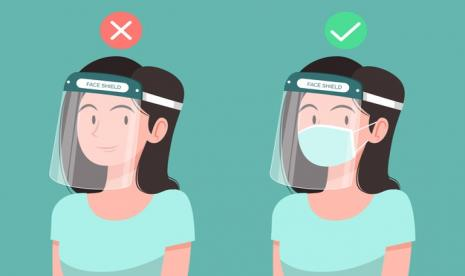
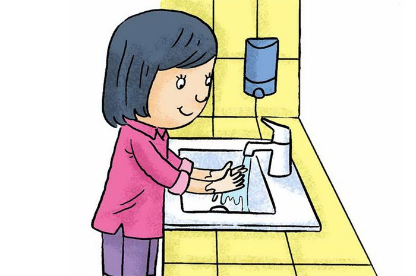
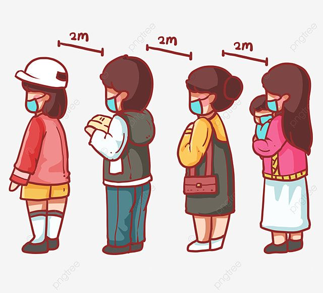
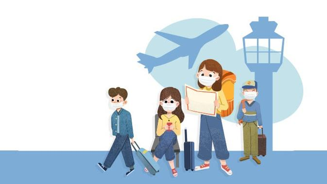

Pencegahan COVID-19
EDU-COVID
Home
Pencegahan COVID-19
Data Dan Statistik
Kuis!
Contact
1. Memakai Masker

2. Mencuci Tangan

3. Menjaga Jarak

4. Menjauhi Kerumunan
5. Mengurangi Mobilitas

Maka dari itu, menerapkan tindakan pencegahan dengan semaksimal mungkin adalah salah satu hal yang wajib dilakukan.